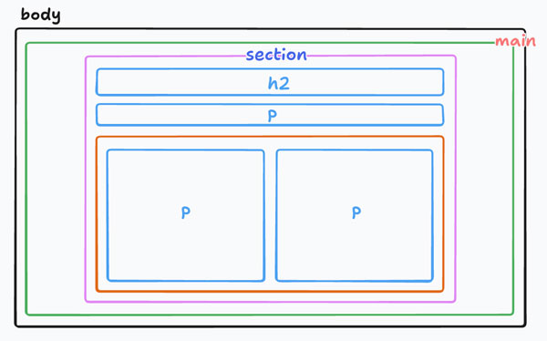
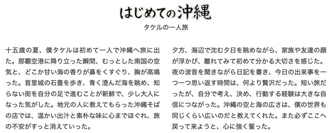

コンテンツ横並び
- プロンプト例
以下の条件でコンテンツを作成して
- 15歳の少年（名前はタケル）の一人旅
- 沖縄旅行の感想文
- 500文字程度、２段落で
※「プロンプト」を実行するたびに結果は変化します。
テキスト
タイトル：はじめての沖縄、タケルの一人旅 十五歳の夏、僕タケルは初めて一人で沖縄へ旅に出た。那覇空港に降り立った瞬間、むっとした南国の空気と、どこか甘い海の香りが鼻をくすぐり、胸が高鳴った。首里城の石畳を歩き、青く澄んだ海を眺め、知らない街を自分の足で進むことが新鮮で、少し大人になった気がした。地元の人に教えてもらった沖縄そばの店では、温かい出汁と素朴な味に心までほぐれ、旅の不安がすっと消えていった。 夕方、海辺で沈む夕日を眺めながら、家族や友達の顔が浮かび、離れてみて初めて分かる大切さを感じた。夜の波音を聞きながら日記を書き、今日の出来事を一つ一つ思い返す時間は、何より贅沢だった。短い旅だったが、自分で考え、決め、行動する経験は大きな自信につながった。沖縄の空と海の広さは、僕の世界も同じくらい広いのだと教えてくれた。また必ずここへ戻って来ようと、心に強く誓った。
ワイヤーフレーム

タイトルを画像にする
- タイトル画像は、nano banana で作成後 Photoshop で加工
完成例

記述例
- 自分のコーディングルールで記述します。
HTML
<!DOCTYPE html> <html lang="ja"> <head> <meta charset="UTF-8"> <title>２カラム - はじめての沖縄</title> <link rel="stylesheet" href="css/style.css"> </head> <body> <!-- main --> <main> <section> <h2><img src="img/okinawa.png" alt="はじめての沖縄"></h2> <p class="subtitle">タケルの一人旅</p> <div class="wrapper"> <p>十五歳の夏、僕タケルは初めて一人で沖縄へ旅に出た。那覇空港に降り立った瞬間、むっとした南国の空気と、どこか甘い海の香りが鼻をくすぐり、胸が高鳴った。首里城の石畳を歩き、青く澄んだ海を眺め、知らない街を自分の足で進むことが新鮮で、少し大人になった気がした。地元の人に教えてもらった沖縄そばの店では、温かい出汁と素朴な味に心までほぐれ、旅の不安がすっと消えていった。</p> <p>夕方、海辺で沈む夕日を眺めながら、家族や友達の顔が浮かび、離れてみて初めて分かる大切さを感じた。夜の波音を聞きながら日記を書き、今日の出来事を一つ一つ思い返す時間は、何より贅沢だった。短い旅だったが、自分で考え、決め、行動する経験は大きな自信につながった。沖縄の空と海の広さは、僕の世界も同じくらい広いのだと教えてくれた。また必ずここへ戻って来ようと、心に強く誓った。</p> </div> </section> </main> <!-- /main --> </body> </html>
CSS
@charset "UTF-8"; /* -------------------------------------------- reset -------------------------------------------- */ * { box-sizing: border-box; margin: 0; padding: 0; } ul { list-style: none; } a { color: inherit; text-decoration: none; } img { max-width: 100%; vertical-align: bottom; } /* -------------------------------------------- body -------------------------------------------- */ body { background-color: #fff; color: #333; font-size: 16px; font-family: "Helvetica", "Arial", sans-serif; line-height: 1.0; } /* -------------------------------------------- layout -------------------------------------------- */ .wrapper { display: grid; grid-template-columns: repeat(2, 1fr); gap: 30px; } /* -------------------------------------------- main -------------------------------------------- */ section { max-width: 800px; margin: 50px auto; } h2 { text-align: center; } h2 > img { width: 240px; } .subtitle { margin-bottom: 30px; text-align: center; } p { text-align: justify; line-height: 1.7; text-indent: 1em; }